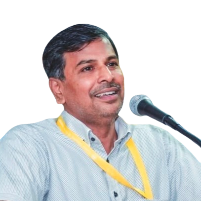
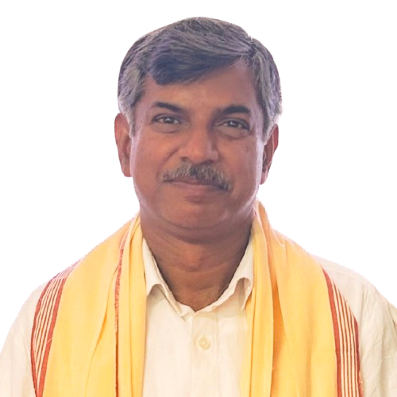

<!DOCTYPE html>
<html lang="en">
<head>
    <meta charset="UTF-8">
    <meta name="viewport" content="width=device-width, initial-scale=1.0">
    <link rel="icon" href="images/rice-logo-vector.ico" type="image/x-icon">
    <title>About the Team | Rice Landraces Project</title>
    <link rel="stylesheet" href="style.css">
    <link rel="preconnect" href="https://fonts.googleapis.com">
    <link rel="preconnect" href="https://fonts.gstatic.com" crossorigin>
    <link href="https://fonts.googleapis.com/css2?family=Poppins:wght@400;600;700&display=swap" rel="stylesheet">
</head>
<body class="page-about">
    <div class="fixed-helix-background">
        <div class="dna-viewport">
            <div id="dna-helix-structure"></div>
        </div>
    </div>

    <div class="genomics-grid"></div>

    <div class="content-container">
        <div class="main-layout">
            <aside class="left-panel">
                 <nav class="animate-on-scroll">
                     <ul>
                        <li><a href="index.html">Home</a></li>
                        <li><a href="explore.html">Explore</a></li>
                        <li><a href="about.html" class="active">About</a></li>
                        <li><a href="references.html">References</a></li>
                        <li><a href="contact.html">Contact</a></li>
                    </ul>
                </nav>
                <div class="page-content animate-on-scroll">
                    <h1>About the Team</h1>
                    <p>Meet the researchers driving the "Genome Exploration of Rice Landraces through Machine Learning Methods and their Validation" project at the Central University of Kerala.</p>

                    <section id="team" class="animate-on-scroll content-section">
                        <h2>Our Researchers</h2>
                        <div class="team-grid">
                            
                                <div class="team-card card animate-on-scroll">
                                    
                                    <a href="https://www.linkedin.com/in/alagu-manickavelu-609b974b/" target="_blank" class="team-name-link">
                                        <h3>Prof. Alagu Manickavelu</h3>
                                    </a>
                                    <p class="team-title">Principal Investigator (PI)</p>
                                    <p class="team-affiliation">Professor, Department of Genomic Science, Central University of Kerala</p>
                                    <p class="team-details">
                                        Prof. Manicks holds a PhD in genetics and plant breeding with specialized training in genomics. His expertise and experience in various national and international agricultural research guide the project's direction in exploring rice landraces.
                                    </p>
                                </div>
                            

                            <div class="team-card card animate-on-scroll">
                                 
                                <a href="https://www.linkedin.com/in/rajesh-r-b7679566/" target="_blank" class="team-name-link">
                                    <h3>Prof. Rajesh R</h3>
                                </a>
                                <p class="team-title">Co-Principal Investigator (Co-PI)</p>
                                 <p class="team-affiliation">Professor, Department of Computer Science, Central University of Kerala</p>
                                <p class="team-details">
                                    Prof. Rajesh has a PhD in Computer Science and contributes his research experience with a focus on areas like fuzzy logic and nature-inspired computing. His knowledge is crucial for developing and implementing the machine learning methods for genome analysis in this project.
                                </p>
                                </div>

                            <div class="team-card card animate-on-scroll">
                                 
                                <a href="https://www.linkedin.com/in/saumya-dwivedi-637b0a214/" target="_blank" class="team-name-link">
                                    <h3>Saumya Dwivedi</h3>
                                </a>
                                <p class="team-title">Project Associate</p>
                                 <p class="team-affiliation">Central University of Kerala</p>
                                <p class="team-details">
                                    Bioinformatician in training with expertise in Data Analysis, Web Design, Software Development, and Machine Learning. MSc. Computer Science first rank holder with experience in developing Machine Learning and Deep Learning Models.
                                </p>
                                </div>
                        </div>
                    </section>

                    <section id="project-summary-about" class="animate-on-scroll content-section">
                         
                        <h2>  Project Overview</h2>
                         
                         <p>
                            Rice landraces hold untapped genetic potential. Our project uses advanced machine learning on genomic data from CUK and IRRI to identify valuable traits (yield, stress tolerance, nutrition) in these traditional varieties, aiming to accelerate modern rice breeding and provide insights applicable to other crops. Collaboration with computer science enhances our analytical power and fosters interdisciplinary training.
                         </p><br>
                         <p>
                            This project is funded by the Anusandhan National Research Foundation (ANRF) under the "The Anusandhan National Research Foundation Act, 2023". We gratefully acknowledge their generous support, which has made our work possible.
                         </p>
                     </section>

                </div>
            </aside>
            <div class="right-panel-spacer"></div>
        </div>
    </div>

    <script src="script.js"></script>
</body>
</html>